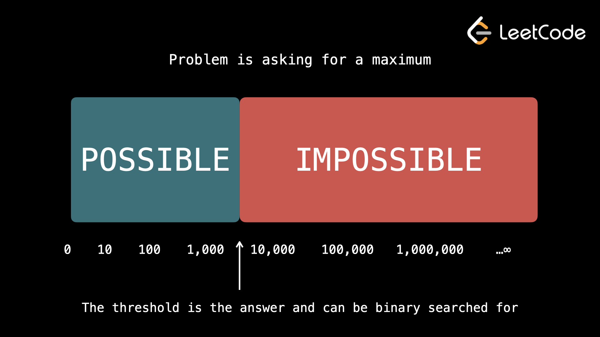

Есть более творческий способ использования бинарного поиска — в пространстве решений/ответе. Очень распространенный тип проблемы: «Каково максимальное/минимальное значение, при котором что-то можно сделать». Бинарный поиск можно использовать, если выполняются следующие критерии:
1. Вы можете быстро (в
O(n) или лучше) проверить, выполнима ли задача для заданного числа x.
2. Если задача выполнима для числа x, и вы ищете:
• Максимум, то это возможно и для всех чисел меньше x.
• Минимум, то это возможно и для всех чисел, больших x.
3. Если задача невыполнима для числа x, и вы ищете:
• Максимум, то это также невозможно для всех чисел, больших x.
• Минимум, то и невозможно для всех чисел меньше x.
2-е и 3-е требования подразумевают наличие двух «зон». Ту, где можно, и ту, где нельзя. Зоны не имеют разрывов, не перекрываются и разделены порогом.

Когда задача хочет, чтобы вы нашли мин/макс, она хочет, чтобы вы нашли порог, при котором задача переходит от невозможного к возможному.
Сначала мы устанавливаем возможное пространство решений, определяя минимально возможный ответ и максимально возможный ответ.
Далее мы выполняем двоичный поиск в этом пространстве решений. Для каждого mid мы выполняем проверку на возможность выполнения задачи. В зависимости от результата мы делим пространство поиска вдвое. В конце концов мы найдем порог.
Если первое требование выполнено (возможна быстрая проверка, если mid), то это даст нам временную сложность O(n⋅logk), где k — диапазон пространства решений. Даже если возможное пространство решений огромно, логарифмы выполняются так быстро, что это очень эффективная временная сложность.
Мы можем написать функцию check, которая принимает целое число и проверяет, выполнима ли задача для этого целого числа. В большинстве случаев алгоритм, который мы используем в этой функции, будет жадным. Давайте посмотрим на несколько примеров.
Example 1: 875. Koko Eating Bananas
Коко любит есть бананы. Есть n стопок бананов, ith стопка имеет
piles[i] бананов.
Коко может решить, что ее скорость поедания бананов в час равна k. Каждый час она выбирает
стопку и съедает
из этой стопки k бананов. Если в куче меньше k бананов, она съедает их все и
больше не будет есть бананов в
течение часа. Верните минимальное целое число k, при котором она сможет съесть все бананы за
h часов.
Если у нас есть скорость еды k и задача выполнима, то все скорости еды больше k тоже будут работать. Если это невозможно, то все скорости питания ниже k не будут работать. Это означает, что мы можем искать ответ в двоичном формате.
Учитывая скорость поедания k, как мы можем проверить, можно ли съесть все стопки за h? Поскольку Коко может есть только одну стопку в час, мы можем рассматривать стопки по отдельности. Если в куче есть bananas, сколько времени потребуется, чтобы пройти через эту кучу? Даже если останется только один банан, независимо от k, это займет дополнительный час. Это означает, что требуется округленное время bananas / k. Мы можем перебрать стопки и найти сумму bananas / k для каждой стопки и проверить, меньше ли она или равна h.
Для бинарного поиска границы должны начинаться с минимального и максимально возможного ответа. Минимально возможный ответ 1 – Коко нужно съедать более 0 бананов в час! Максимально возможный ответ — max(piles). Нет никакого смысла в том, чтобы есть быстрее, чем эта скорость.
Существует несколько шагов для определения использования бинарного поиска, а затем для его реализации.
Во-первых, проблема в том, что требуется минимальная скорость еды. Если Коко может съесть все бананы со скоростью k, то она наверняка сможет съесть все бананы и со скоростью k + 1. Если она не может, то она, конечно, не может и со скоростью k - 1.
Это создает две «зоны». Далее нам нужно определить границы пространства поиска. Независимо от входных данных, мы знаем, что скорость поедания никогда не может быть ниже 1, потому что скорость поедания должна быть целым числом, а скорость поедания, равная 0, будет означать, что бананы никогда не будут съедены. Если скорость поедания равна max(piles), то на каждую стопку уйдет один час. Улучшить это невозможно (поскольку задача гласит, что даже если скорость поедания превышает количество бананов в кучке, это все равно займет один час). Следовательно, наше пространство поиска — [1, max(piles)].
Наконец, нам нужно выяснить, как реализовать функцию check для заданной скорости еды k.
В постановке задачи говорится, что если в куче окажется меньше k бананов, Коко съест их все, а затем больше не будет есть до конца часа. Если в кучке 8 бананов, а скорость поедания Коко равна 3, то Коко может съесть 6 бананов за 2 часа, оставив в кучке 2 банана. Затем Коко нужно потратить еще час на то, чтобы съесть оставшиеся 2 банана.
Количество часов, необходимое для того, чтобы съесть кучу bananas со скоростью k, равно bananas / k, округленное в большую сторону. Мы можем перебирать входные данные, суммировать значения bananas / k и проверять, находится ли оно в наших пределах.
Определив пространство поиска и реализовав функцию check, мы можем выполнить двоичный поиск, чтобы найти порог.
def check(k):
hours = 0
for bananas in piles:
hours += ceil(bananas / k)
return hours <= h
left = 1
right = max(piles)
while left <= right:
mid = (left + right) // 2
if check(mid):
right = mid - 1
else:
left = mid + 1
return left
check работает за Время O(n), где n = piles.length. Бинарный поиск запускается Время O(logk), где k = max(piles). Это дает нам временную сложность O(n⋅logk), что очень быстро, поскольку log — чрезвычайно быстрая функция. Мы не используем никакого дополнительного пространства, за исключением нескольких целочисленных переменных.
Example 2: 1631. Path With Minimum
Effort
Вам заданы heights, положительный двумерный массив размером m x n, где
heights[row][col] представляет высоту
ячейки (row, col). Вы можете двигаться вверх, вниз, влево или вправо. Усилие пути — это
наибольшая
абсолютная разница, которую вы можете иметь между любыми двумя последовательными пройденными ячейками.
Верните минимальное усилие, необходимое для перехода из левого верхнего угла в правый нижний.
Если вы не можете совершить путешествие, прилагая effort, то невозможно совершить его, затратив меньше effort. Если вы можете это сделать, то это возможно сделать со всеми числами, превышающими effort.
Дано целочисленное effort, как мы можем проверить, существует ли путь? Мы можем создать простую DFS, начиная с (0, 0), с ребрами, расположенными в 4 направлениях и проходимыми только в том случае, если разница между текущим узлом и следующим меньше или равна effort.
С чего должны начинаться границы для нашего бинарного поиска? Минимально возможное усилие равно 0 — может существовать путь, в котором все числа одинаковы. Максимально возможное усилие — это наибольшее число во входных данных, поскольку во входных данных нет отрицательных чисел.
Давайте проделаем те же шаги, что и в предыдущем примере.
Во-первых, проблема требует минимальных усилий. Если задача выполнима при заданном effort, то это означает, что существует некоторый путь, на котором все соседние ячейки имеют разницу, меньшую или равную effort. Разумеется, задача возможна и с effort + 1, поскольку путь, о котором мы говорим, также будет пройден, если увеличить максимально допустимую разность.
Аналогично, если задача невыполнима для заданного effort, она наверняка будет невыполнима и с effort — 1. Если пути не существует, то уменьшение максимально допустимой разницы не приведет к созданию пути. Мы выделили две зоны.
Далее нам нужно определить пространство поиска. Учитывая произвольные входные данные, задача может быть выполнена с 0 усилиями (например, если бы все квадраты имели одинаковое значение). Если наибольшее число во входных данных равно x, нам никогда не потребуется больше x усилий. Отрицательные числа не допускаются, поэтому не может существовать разницы между двумя элементами, большими, чем x. Мы определили наше пространство поиска как [0, x].
Наконец, нам нужно реализовать функцию check для заданного усилия. Мы можем смоделировать матрицу в виде графа, как мы это делали много раз в главе о деревьях и графах. Выполните DFS из верхнего левого квадрата и попытайтесь достичь правого нижнего квадрата. Перемещайтесь к соседу только в том случае, если разница между узлами меньше или равна effort.
def valid(row, col):
return 0 <= row < m and 0 <=col < n
def check(effort):
directions = [(0, 1), (1, 0), (0, -1), (-1, 0)]
seen = {(0, 0)}
stack = [(0, 0)]
while stack:
row, col = stack.pop()
if (row, col) == (m - 1, n - 1):
return True
for dx, dy in directions:
next_row, next_col = row + dy, col + dx
if valid(next_row, next_col) and (next_row, next_col) not in seen:
if abs(heights[next_row][next_col] - heights[row][col]) <= effort:
seen.add((next_row, next_col))
stack.append((next_row, next_col))
return False
m = len(heights)
n = len(heights[0])
left = 0
right = max(max(row) for row in heights)
while left <= right:
mid = (left + right) // 2
if check(mid):
right = mid - 1
else:
left = mid + 1
return left
DFS работает O(m⋅n) времени, и двоичный поиск выполняет его O(logk) раз, где k — максимальный элемент во входных данных. Это дает временную сложность О(m⋅n⋅logk). Для выполнения DFS мы используем O(m⋅n) пространство для стека и seen.
Example 3: 1870. Minimum Speed to
Arrive on Time
Вам дается плавающий hour, представляющий количество времени, которое вам нужно, чтобы
добраться до офиса.
Чтобы добраться до офиса, вам нужно сесть на n поездов в последовательном порядке. Вам также
дан
целочисленный массив dist, где dist[i] описывает расстояние ith поездки
на поезде.
Каждый поезд может отправляться только через целое число часов, поэтому вам, возможно, придется подождать
между поездками на поезде.
Например, если первая поездка на поезде занимает 1,5 часа, вам придется подождать еще 0,5 часа, прежде чем
вы сможете отправиться на второй поездке через 2 часа. Вернуть минимальную положительную целочисленную
скорость, с которой должны двигаться все поезда, чтобы вы могли добраться до офиса вовремя, или
-1, если
невозможно прийти вовремя. Ответ не превысит 107.
Эта проблема очень похожа на то, как Коко ест бананы. Если у нас есть скорость k, а поезд имеет расстояние d, то поезд тратит d / k времени. Проблема имеет дополнительное ограничение: поезда отправляются только в целые часы, поэтому нам также необходимо округлять время в большую сторону, прежде чем садиться на каждый поезд.
Минимально возможная скорость равна 1, а максимальная равна 107 как указано в описании проблемы. Тот факт, что проблема заключается в предоставлении нам этой информации, на самом деле является намеком на использование двоичного поиска, но возникает хороший вопрос: что делать, если вы не можете получить максимально возможный ответ из того, что дано во входных данных? Вы можете использовать сколь угодно большое число для right, например 1010 . Логарифмы выполняются настолько быстро, что это вряд ли будет иметь значение.
Задача также может быть просто невыполнимой — проблема гласит, что мы должны вернуть -1, если это так. Когда это невозможно? Поскольку каждый поезд отправляется только на целое число, даже если у нас смехотворно высокая скорость, каждый поезд будет идти не менее 1 часа. Поэтому, если поездов больше, чем разрешено, это невозможно.
Примечание: в функции check мы не берем потолок конечного значения, потому что нам не нужно больше ждать поездов. Округление вверх предназначено для имитации ожидания следующего поезда в следующий целый час.
if len(dist) > ceil(hour):
return -1
def check(k):
t = 0
for d in dist:
t = ceil(t)
t += d / k
return t <= hour
left = 1
right = 10 ** 7
while left <= right:
mid = (left + right) // 2
if check(mid):
right = mid - 1
else:
left = mid + 1
return left
Технически эта задача имеет временную сложность O(n), где n — длина входного массива, поскольку задача явно говорит нам, что максимальный ответ — 107 , и логарифм этого значения является константой. Однако правильнее было бы сказать, что алгоритм имеет временную сложность O(n⋅logk), где k — максимально возможный ответ. Мы не используем никакого дополнительного пространства, за исключением нескольких целочисленных переменных.
Все три примера, которые мы рассмотрели в этой статье, требовали минимума. Во всех решениях мы return left.
Если вместо этого проблема заключается в том, чтобы задать максимум, то left не будет правильным ответом в конце. Вместо этого нам следует return right.
Почему left точка указывает на ответ при поиске минимума, а right — на ответ при поиске максимума?
Допустим, мы ищем минимум, и ответ — x. После выполнения check(x) мы устанавливаем right = x - 1, поскольку check(x) вернет true, и мы перемещаем правую границу в поисках лучшего ответа. Как видите, правильный ответ сейчас находится за пределами нашего пространства поиска. Это означает, что каждая будущая итерация check будет неудачной, а это значит, что мы будем постоянно увеличивать значение left, пока в конечном итоге не попробуем check(x - 1). Это не удастся и установит left = (x - 1) + 1 = x. Наш цикл while завершается, потому что left > right, а ответ left.
Если вместо этого мы ищем максимум, после выполнения check(x) мы устанавливаем left = x + 1. Опять же, правильный ответ находится за пределами пространства поиска, и все будущие проверки завершатся неудачно. В конце концов, мы пытаемся check(x + 1), терпим неудачу и устанавливаем right = (x + 1) - 1 = x. Цикл завершается, поскольку right < left, а right указывает на ответ.
В главе «Интервью и инструменты» есть статья с шаблонами кода. В этой статье приведен шаблон кода для двоичного поиска в пространстве решений для обоих сценариев (поиск максимума и минимума).
Прежде чем переходить к тесту на бинарный поиск, попробуйте решить предстоящие практические задачи самостоятельно.